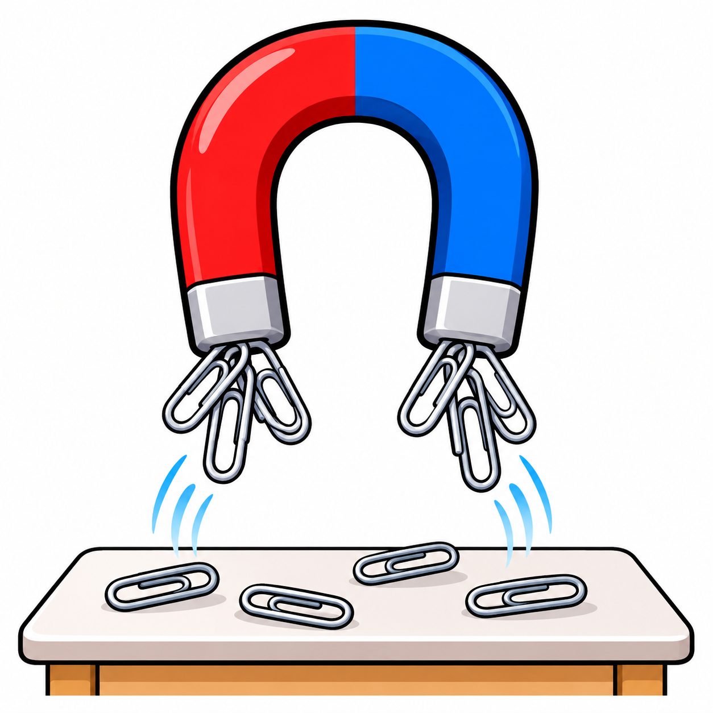

← Alle thema’s
← Oefeningen
WERELDKANJERS 1 · THEMA 4
Speuren naar kracht en licht
Voor de leerkracht

Ik oefen
Speuren naar kracht en licht
Tik op een luidspreker. Die leest voor jou.
🔊 Luister
🖼️ Kijk en luister naar de woorden
🔊
↶ Opnieuw
Volgende →
Kijk en luister